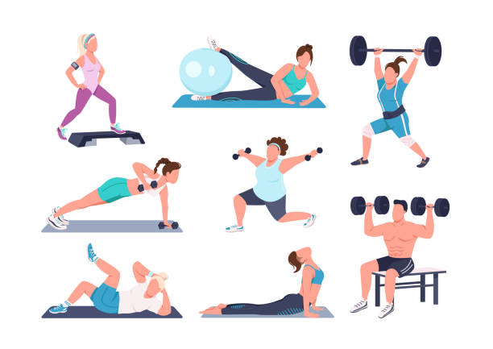
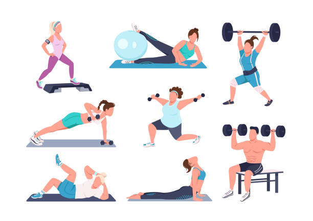

Exercícios Físicos em Casa
Ficar ativo em casa é mais fácil do que você imagina. Considere as seguintes atividades:
- Yoga: Melhora a flexibilidade e reduz o estresse.
- Treino de Força: Use pesos ou até mesmo objetos de casa, como garrafas de água.
- HIIT: Treinos de alta intensidade que podem ser feitos em 20-30 minutos.
- Danças: Coloque suas músicas favoritas e dance para se divertir enquanto se exercita!
 
